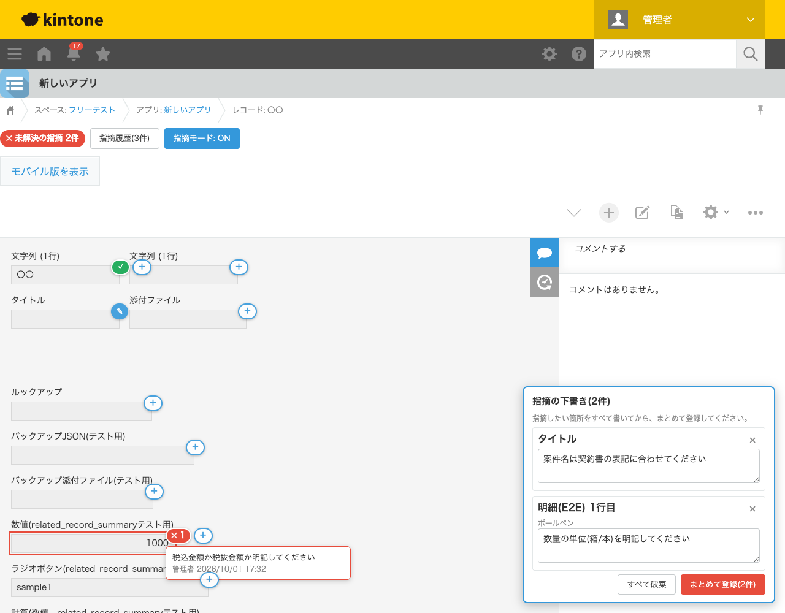
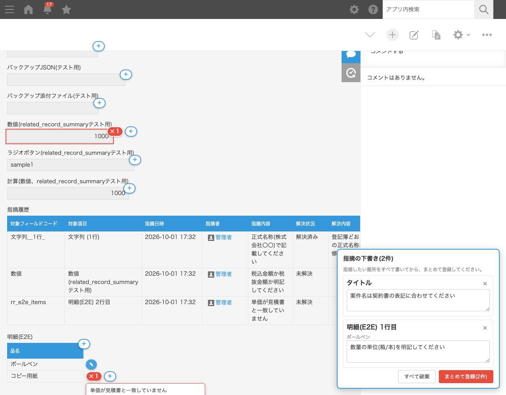
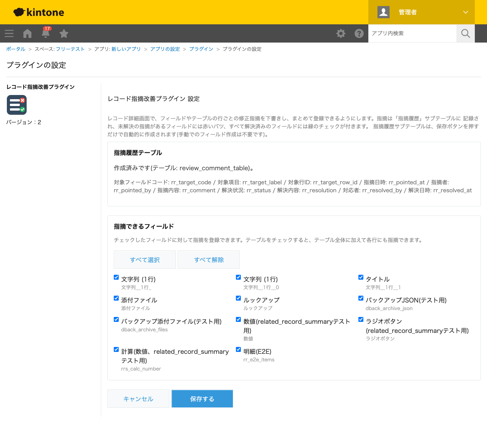

GovAppsプラグイン 安全性を確認できる無料kintoneプラグイン集
申請内容のチェックや書類の校閲で、「どの項目の・何を直してほしいか」をコメント欄に書いても、 項目との対応があいまいになり、直したかどうかも追いかけにくくなりがちです。このプラグインを使うと、 レコード詳細画面でフィールドごと・テーブルの行ごとに修正指摘を下書きし、まとめて登録できます。 未解決の指摘がある箇所には赤いバツマークが付き、マウスを乗せると指摘内容が表示されます。 対応した人が解決内容を登録すると緑のチェックマークに変わります。指摘日時・指摘者・指摘内容・ 解決状況・解決内容・対応者・解決日時はレコード内の「指摘履歴」サブテーブルに残るため、これまでのやり取りも あとから確認できます。
審査担当者は指摘モードで、気づいた不備を「申請金額」「事業期間」などの項目ごとに下書きし、最後に「まとめて登録」で一度に登録します。経費明細テーブルの「3行目の単価が見積書と違う」といった行単位の指摘もできます。担当者がレコードを開くと、不備のある項目・行に赤いバツが付いているので、どこを直せばよいかがすぐに分かります。修正後に「見積書に合わせて修正しました」と解決内容を登録すると緑のチェックに変わり、審査担当者は残りの不備だけを確認できます。
決裁前の校閲で、上長が「件名」「本文」「相手方」の各項目への修正指示を下書きし、読み終えてからまとめて登録します。起案者は編集画面の上部に表示される未解決の指摘一覧を見ながら修正でき、修正後に解決内容を登録します。指摘と対応の経緯はサブテーブルに残るため、のちの監査や担当替えのときにも、どんな修正を経て決裁されたかを確認できます。
顧客台帳や施設台帳の定期点検で、確認担当者が「住所が旧表記のまま」「電話番号が不通」などをフィールドごとに指摘します。レコード上部には「未解決の指摘 n件」が表示され、「指摘履歴」ボタンで全件(解決済み含む)を一覧表示し「未解決のみ」に絞り込むこともできます。
新人が登録した報告書や日報を先輩がレビューし、項目ごとに書き方のアドバイスを指摘として残します。新人は解決内容に直した点を書いて登録するため、どんな指摘を受けてどう直したかが本人の振り返りにもなります。
フィールド横のバツ・チェックの表示と、指摘の登録・解決はPCのレコード詳細画面で行います。モバイルでは、レコード詳細・編集画面の上部に未解決の指摘一覧が表示されます(閲覧のみ)。指摘履歴サブテーブルは、レコードの追加・編集画面では直接編集できないようにしています。
v1をお使いの場合: プラグインを更新したあと、設定画面を開いて一度「保存する」を押してください。既存の指摘履歴テーブルに「対象行ID」列だけが追加され(これまでの指摘はそのまま残ります)、テーブルの行単位の指摘が使えるようになります。


kintoneセキュアコーディングガイドラインに沿って実装時にチェックしています。特に重要な点は次のとおりです。
textContentで描画し、innerHTMLを一切使用していません(XSS対策)。kintone.api()のみを使用し、外部サーバーへの通信や外部ライブラリは一切ありません。詳細な確認項目・確認日は下記GitHubのチェックリストに全項目を掲載しています。

レコード詳細画面を表示するだけではREST APIを使用しません(フィールド情報はJavaScript APIで取得します)。 指摘の「まとめて登録」(件数によらず)・解決を1回行うごとに、最新レコードの取得と更新で2回のAPIを実行します。 設定画面での保存時は、指摘履歴テーブルを新規作成する場合(またはv1のテーブルに列を追加する場合)のみ、フィールド追加・アプリ反映・反映状況の確認でAPIを実行します。